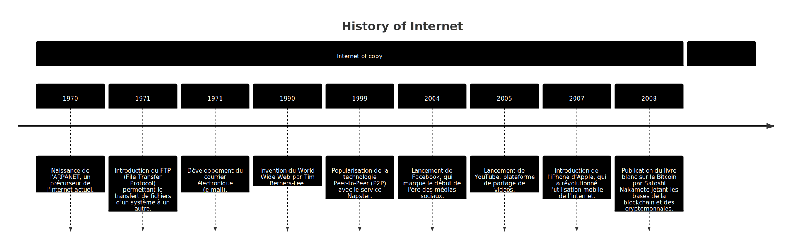

Je suis ravi de vous accueillir dans ce cours passionnant qui vous permettra
de comprendre les bases de la Blockchain, les cryptomonnaies, et bien plus encore.
Que vous soyez novice en matière de Blockchain ou que vous cherchiez à
approfondir vos connaissances, j'ai conçu ce cours pour vous offrir une compréhension complète
et pratique de la technologie Blockchain.
Préparez-vous à explorer le formidable potentiel de la Blockchain et à
découvrir comment elle peut transformer le monde de la technologie et au-delà.
Commençons ce voyage passionnant ensemble!
Menu
Identification du module
Identifier les répercussions des solutions blockchain sur le quotidien professionnel.
Choisir une technologie blockchain appropriée en fonction d'une situation donnée.
Installer et configurer le matériel informatique d'une installation de minage.
Procéder au chiffrement d'un jeu de données ou d'un fichier à l'aide d'une procédure blockchain.
Élaborer un propre cas d'application et le prototype correspondant.
Planifier des méthodes de contrôle qualité et les mettre en œuvre.
Maîtriser les méthodes d'assurance qualité, de contrôle qualité et de tests.
Le Test Sommatif 1 évaluera votre compréhension des concepts théoriques de la Blockchain et des
cryptomonnaies abordés lors des deux premiers jours du cours.
Il couvrira les bases de la Blockchain, les types de Blockchain, la structure et le concept des
principales Blockchains,
ainsi que les opportunités et les risques liés aux cryptomonnaies
Épreuve 2 - Analyse d'un cas réel (Pondération : 50%)
Le Test Sommatif 2 évaluera vos compétences pratiques en configuration de minage et en développement
sur la Blockchain,
mettant en pratique les concepts appris lors du cours
Objectifs du Cours
Comprendre les bases de la Blockchain et les cryptomonnaies.
Apprendre la structure et le concept des principales Blockchains.
Connaître les opportunités et les risques liés aux cryptomonnaies.
Comprendre les principales crypto-technologies et leur fonctionnement.
Apprendre les concepts de configuration et de sécurité d'une installation de minage.
Construction du cours
Conçu pour les novices en matière de Blockchain.
Couvre une variété de sujets, de la théorie à la pratique.
Inclut des activités pratiques et des tests sommatifs.
Vers l'Infini et au-delà : Un Voyage à Travers la Blockchain
La blockchain n'est pas simplement une autre technologie, c'est le précurseur d'une
révolution
numérique sans précédent.
Joignez-vous à nous dans ce voyage captivant où nous démêlerons ensemble les énigmes
entourant
la blockchain.
Nous allons explorer comment cette innovation façonne audacieusement le paysage
technologique
mondial et redéfinit notre conception de la sécurité, de la transparence et de l'autonomie.
Au commencement : les origines de la Blockchain
Mais avant de parler de toutes ces monnaies, ...
je vous propose de reprendre ensemble l'histoire de l'internet.
Histoire de l'internet

Exercices :
Selon vous, quel est le protocole le plus couramment utilisé dans le cadre du partage de fichiers en
ligne ?
Pouvez-vous expliquer pourquoi le partage en ligne de fichiers peut poser des défis aux entreprises qui
vendent des contenus physiques comme des disques, des films ou d'autres types de médias numériques
susceptibles d'être partagés facilement ?
Pensez-vous que la photo de votre chat possède une valeur
intrinsèque ?
Justifiez votre réponse.
Est-il possible de transférer un billet de 100 francs via internet ?
Si oui, comment cette action pourrait-elle influencer sa valeur ?
Problèmes liés à la centralisation des services tiers
(1/2)
Perte de contrôle :
Délégation de l'accès à des services tiers entraînant une perte de contrôle sur les données et les
opérations.
Dépendance excessive :
Forte dépendance du bon fonctionnement des services tiers pour assurer le bon fonctionnement de votre
application ou de vos processus.
Confidentialité et sécurité :
Risques pour la confidentialité et la sécurité en raison de la centralisation des données et des
opérations, surtout si les mesures de protection des services tiers sont insuffisantes.
Risque de panne :
Problèmes techniques ou arrêt des services tiers pouvant provoquer des interruptions ou des
dysfonctionnements dans vos propres systèmes, entraînant une perte de disponibilité ou des impacts sur
les performances.
Problèmes liés à la centralisation des services tiers
(2/2)
Coûts :
Frais financiers tels que des abonnements, des commissions ou des modèles de tarification liés à
l'utilisation de services tiers, pouvant affecter votre budget.
Évolutivité limitée :
Limitation des fonctionnalités et de l'évolutivité proposées par les services tiers, restreignant vos
options pour répondre à des besoins spécifiques ou des demandes de croissance.
Vulnérabilité aux changements :
Impact sur vos opérations et vos données suite à des modifications des conditions d'utilisation, de la
politique de confidentialité ou de la disponibilité des services tiers, nécessitant une adaptation ou
une reconfiguration de votre part.
Le blockchain : Web 3.0
L'internet de la valeur
Transferts instantanés :
Échange d'actifs sans intermédiaire, permettant des transactions rapides et efficaces.
Élimination d'intermédiaires :
Réduction des coûts et de la complexité grâce à des transactions directes et automatisées.
Blockchain & cryptomonnaies :
Utilisation de registres décentralisés,
transparents et sécurisés pour garantir la confiance et la traçabilité.
Inclusion financière :
Accès élargi aux services financiers, offrant des opportunités pour tous les individus, notamment les
non-bancarisés.
Qu'est-ce que la cryptographie et pourquoi est-elle importante dans la blockchain ?
Comment les transactions sont-elles enregistrées et vérifiées dans la blockchain ?
Qu'est-ce qu'un bloc dans la blockchain et comment les blocs sont-ils liés entre eux ?
?
La Cryptographie dans la Blockchain
Sécuriser les transactions et assurer l'anonymat
Qu'est-ce que la cryptographie ?
La cryptographie est une méthode pour sécuriser les communications en utilisant des codes, de sorte que
seules les personnes pour qui l'information est destinée peuvent la lire et la comprendre.
Processus de cryptage et de décryptage
Cryptographie à clé publique
La blockchain utilise la cryptographie à clé publique, qui utilise une paire de clés : une clé publique pour
crypter les informations et une clé privée pour les décrypter.
comment la clé publique et la clé privée fonctionnent ensemble
Comment la cryptographie est utilisée dans la blockchain
Dans la blockchain, la cryptographie est utilisée pour sécuriser les transactions et assurer l'anonymat des
utilisateurs.
Chaque transaction est signée avec la clé privée de l'utilisateur, ce qui garantit que la transaction est
authentique et n'a pas été modifiée.
une transaction étant signée avec une clé privée, puis vérifiée avec la clé publique
correspondante
Hashing
Le hachage est une autre technique cryptographique utilisée dans la blockchain. Il transforme les données
d'entrée de n'importe quelle taille en une sortie de taille fixe, ce qui est utile pour vérifier l'intégrité
des données.
Processus de hachage.
Résumé
La cryptographie est essentielle pour la sécurité et le fonctionnement de la blockchain. Elle permet de
sécuriser les transactions, de protéger l'anonymat des utilisateurs et de maintenir l'intégrité des données.
Schéma d'un block
Type de Blockchain
Publique
Privée
Consortium
Blockchain Publique
Définition
Une blockchain publique est ouverte à tous. Tout le monde peut participer à la validation des
transactions et à la création de nouveaux blocs.
Avantages
Transparence totale : Toutes les transactions sont publiques et vérifiables par quiconque.
Aucune entité unique ne contrôle le réseau.
Inconvénients
Efficacité et vitesse plus faibles : Le processus de validation est plus lent que dans les
blockchains
privées.
Consommation d'énergie plus élevée : Les blockchains publiques utilisent souvent la preuve de
travail (Proof
of Work) qui est énergivore.
Exemple
Bitcoin est un exemple de blockchain publique.
Blockchain Privée
Définition
Une blockchain privée est contrôlée par une seule entité. L'accès à la blockchain est limité à cette
entité ou à des participants spécifiquement invités.
Avantages
Efficacité et vitesse plus élevées : Moins de participants signifie un processus de validation plus
rapide.
Consommation d'énergie réduite : Les blockchains privées n'ont pas besoin de preuve de travail.
Inconvénients
Manque de transparence : Toutes les transactions ne sont pas nécessairement visibles pour tous les
participants.
Centralisation : Une seule entité a le contrôle, ce qui peut entraîner des problèmes de confiance.
Exemple
Hyperledger est un exemple de blockchain privée.
Blockchain de Consortium
Définition
Une blockchain de consortium est contrôlée par un groupe d'entreprises. Seuls les nœuds de ce groupe
peuvent valider les transactions.
Avantages
Equilibre entre transparence et efficacité : Plus rapide que les blockchains publiques mais plus
transparent que
les blockchains privées.
Partage du contrôle : Aucune entreprise unique ne détient tout le pouvoir.
Inconvénients
Accès limité : Seuls les membres du consortium peuvent participer.
Moins de décentralisation : Le réseau est contrôlé par un groupe restreint plutôt que par un large
public.
Exemple
Quorum, développé par JP Morgan, est un exemple de blockchain de consortium.
Comparaison et Conclusion
Tableau de comparaison entre les blockchains publique, privée, et de consortium
Modérée (Les transactions sont visibles par
les membres du consortium)
Vitesse et Efficacité
Faible (Processus de validation lent)
Haute (Processus de validation rapide)
Modérée (Plus rapide que les publiques, plus
lente que les privées)
Contrôle
Décentralisé
Centralisé
Partiellement décentralisé
Exemple
Bitcoin
Hyperledger
Quorum
Point clé :
Le choix du type de blockchain dépend des besoins spécifiques de l'organisation ou de l'individu.
Par exemple, une organisation qui a besoin de transparence totale pourrait opter pour une blockchain
publique,
tandis qu'une organisation qui a besoin de plus de contrôle et de confidentialité pourrait opter pour une
blockchain privée.
Conclusion :
Comprendre les différents types de blockchain est crucial pour faire un choix éclairé. Chaque type de
blockchain a ses avantages et ses inconvénients, et il est important de considérer ces facteurs en fonction
de ce que l'on cherche à réaliser avec la technologie de la blockchain.
Atelier
Exercice P5.1bis C107 - Technologie Blockchain
Objectif : Comprendre comment différentes entreprises utilisent la blockchain pour
résoudre des problèmes spécifiques.
Entreprises :
Bitcoin, Ethereum, Ripple, IBM Blockchain, De Beers
Consignes :
Pour chaque entreprise, recherchez et expliquez :
Le problème spécifique que l'entreprise cherche à résoudre avec la blockchain.
Comment la blockchain aide à résoudre ce problème.
Les avantages de l'utilisation de la blockchain par rapport aux méthodes traditionnelles.